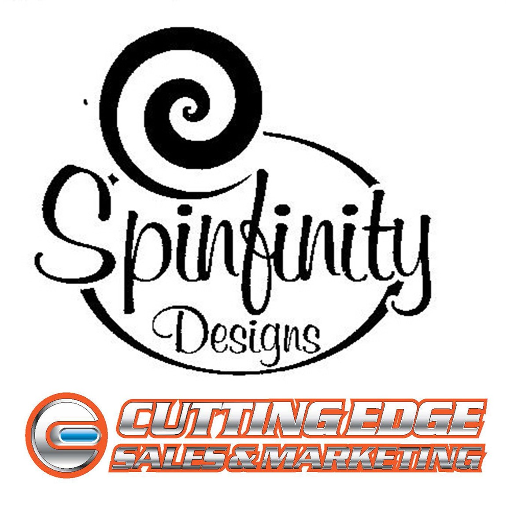

|
Sachin Solanki
I'm a first-year student at the Schulich School of Business in Toronto, Ontario,
where I am taking my passion for business learning to the next level.
I work part-time as a Sales Specialist at Pro Hockey Life, and have been
since April of 2022, where I continuously give back to the game I love.
In the summer of 2024, I will be starting my role as a Business Development Intern at Goodszilla,
where I will be driving in new business, furthering my journey into the exciting world of sales!
Email / CV /
Bio / LinkedIn
|
|
|
|
Pro Hockey Life | Sales Specialist | April 2022 - Present
Demonstrated expertise in product knowledge by communicating key features & benefits to customers, enhancing their
understanding & driving sales by generating positive word-of-mouth referrals, contributing to overall sales growth.
Streamlined onboarding by aiding in the training of new sales associates, ensuring seamless integration into the team.
Provided crucial support during peak sales periods, showcasing adaptability, and contributing to the team's success.
Proactively navigated high-pressure situations, showcasing a commitment to achieving and exceeding organizational goals.
|
|

|
Cutting Edge Sales & Marketing | Marketing Intern | September 2021 - January 2022
Strategically managed and enhanced the wholesale website, ensuring its visual appeal and consistency to captivate potential
customers resulting in a substantial increase in average order value, establishing the platform as a key driver for growth.
Exemplified exceptional decision-making & reasoning skills under high-pressure scenarios, strategically executing critical
choices that had a profound and lasting impact, ultimately optimizing, and shaping the trajectory of future operations.
Led the seamless fulfillment of orders as large as $25,000 within a warehouse, leveraging organizational expertise,
self-regulating abilities, & meticulous attention to detail contributing to the overall efficiency & success of the logistics process.
|
|
|
The Critical Thinking Consortium | Data Mining | October 2020
Actively scoured the Critical Thinking Consortium website to find sources that were not behind a paywall.
Provided a title, location and synopsis of the sources so the company could market critical thinking material for teachers across Canada.
|
|
|
Schulich School of Business | Bachelor of Business Administration | Class of 2027
Relevant Courses: Marketing, Financial Accounting I & II
GPA: 8.2 (9-point scale)
3.84 (4-point scale)
Scholarships: York University Entrance Scholarship ($2,500)
Marlene Long Scholarship ($1,000)
|
|
|
Tommy Douglas Secondary School | Ontario Secondary School Diploma | Class of 2023
Designations: Business Specialist High Skills Major
Ontario Scholar (all four years)
GPA: 91% Graduating Average
|
|
|
Schulich Entrepreneurship Club | Think Tank Competition - 1st Place | February 2024
Adapted quickly to evolving challenges and feedback throughout the competition, demonstrating resilience and flexibility
in adjusting our strategy and approach as needed.
Utilized visual aids and storytelling techniques to engage the audience and convey the value proposition of our proposed
solution, putting my exceptional public speaking and presentation skills on display.
|
|
|
Schulich Sales Association | First-Year Representative | September 2023 - Present
Consulted 5+ external partners to execute club initiatives, including sponsorships, resulting in increased brand exposure.
Upheld a positive & cooperative spirit, fostering an inclusive & motivating team environment that facilitated shared success.
Demonstrated clear & concise communication, ensuring seamless information flow & understanding among members.
Collaborated with leadership teams to execute events, showcasing strong collaboration skills & organizational commitment.
|
|
|
Vaughan Rangers | Alternate Captain - Most Dedicated Player | May 2019 - April 2023
Served as a role model for teammates, consistently displaying a robust work ethic, unwavering discipline, & maintaining a
positive attitude on & off the ice through leading by example, fostering a team culture of dedication and sportsmanship.
Exceptional commitment to personal growth by actively seeking constructive feedback, implementing improvements,
and maintaining a continuous dedication that elevated both individual standards & collective team success.
|
|
{kind=link}